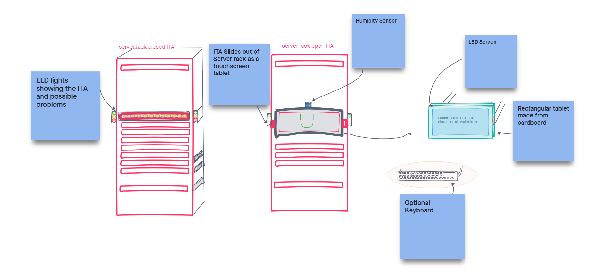

For this project, I was responsible for gathering participants, programming, and creating the concept fot the prototype video. The objective was to create some sort of device (what one would think of a robot or otherwise) that would assist IT workers and evaluate how it would perform in a real world scenario.
IT workers can have an overwhelming amount of work to accomplish, with a myriad of problems faced on a daily basis, especially problems such as power surges, data corruption, and other various networking issues. On top of that, entry level IT workers are often completely lost without their superiors, due to their lack of experience. In addition, different devices that must be supported have varying interface capabilities, making it hard to remember how to troubleshoot multiple devices, especially with the varying different software. Consequently, a device that provides seamless interface functionality within an IT department feels necessary. Our findings suggest so, as our participants have commented that with their workload, an assistant could prove to be useful to lessen the burden on training new employees, doing menial tasks, like clearing batch store managers, and more.
I first tried gathering participants via Reddit, specifically via r/InformationTechnology, which was not successful. I then tried finding our particpants via various Discord servers, from which I found my participants. From there, participants were invited to a Zoom meeting, which was recorded. From there, my partner took additional notes. During each interview, we asked the participant several questions about their opinion on robots and virtual assistants. We also asked each participant to draw their ideal device, and after the first participant, showed them our other participants’ ideas, and asked for their opinions on them.
In short, our participants all agreed that a humanoid or other type of social robot would not be beneficial. Rather, they chose more of a “smart” tool that can be used whenever they absolutely need to in their workforce, and can be programmed to the user’s content. Consequently, this device will not be meant to satiate a users emotions, but will be used as more of a tool to provide administrative support for menial tasks to ease employee workload. This approach proves to be more efficient than using humanoid (or similar) types of assistants.
Click here for a skit showing off the possibilities of our device.
This is a sketch of our prototype.
Here are some pictures of our prototype:
Code for the prototype can be found here.
Unfortunately, due to CoVID-19, we were unable to test it in a real-world environment. Beyond that, due to the limitations of the Arduino, we were not able to implement checking for electrical failures or packet loss in any capacity. We were able to fully implement temperature and humidity detection, thanks to the device that was included with our Arduino kit. In addition, the only participant we could call back to evaluate our prototype video (as that is the best way to communicate what we would want our device to be) was participant A. Participant A reacted very positively to our prototype video. His only negative feedback was that the screen should be bigger, which for our scope is relatively easy to accomplish.